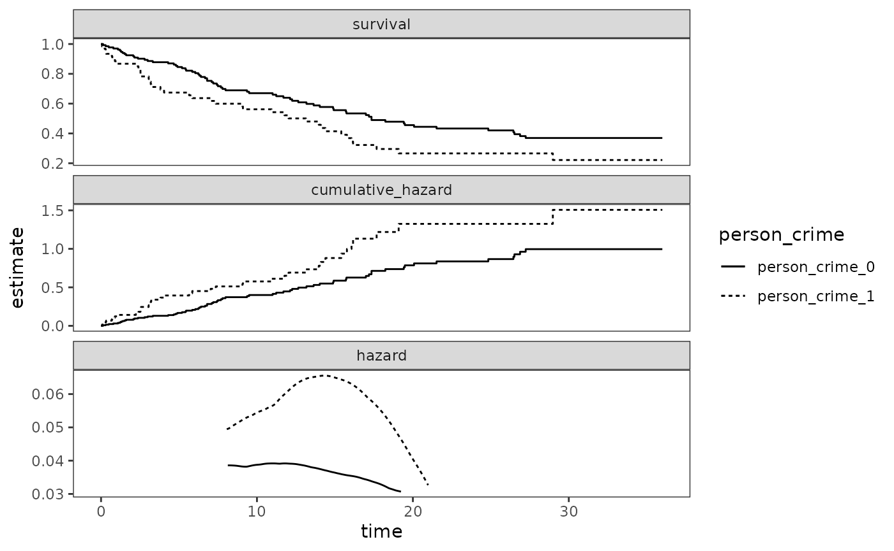
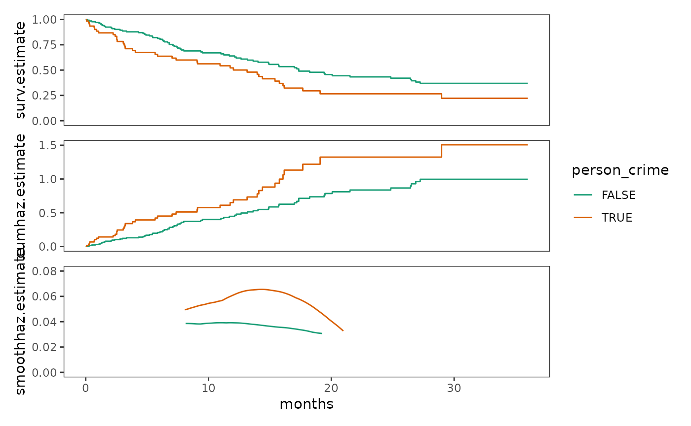
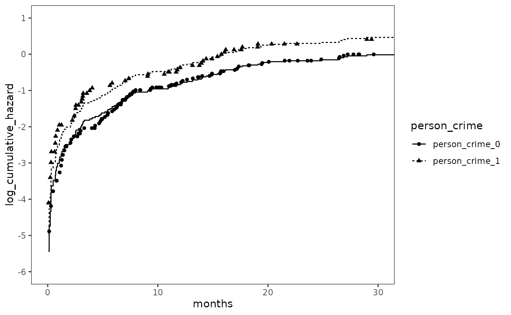
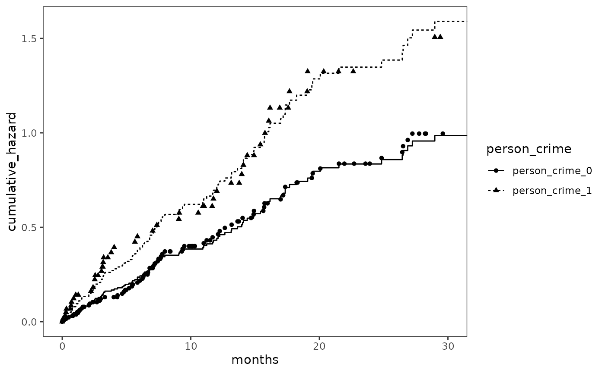
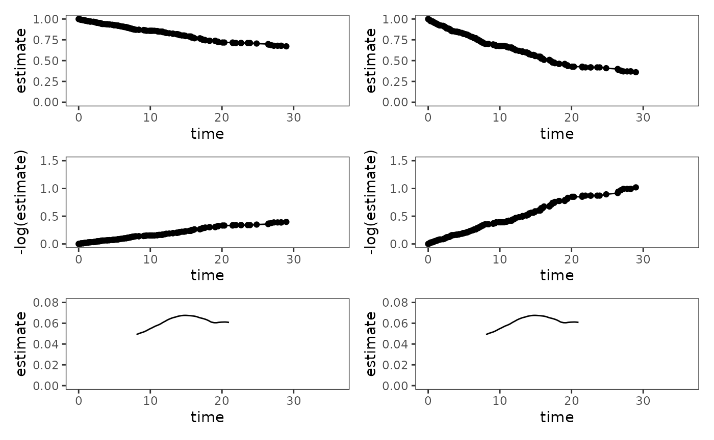
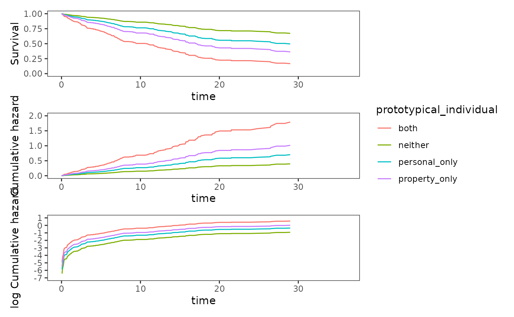

Chapter 14: Fitting the Cox regression model
Source:vignettes/articles/chapter-14.Rmd
chapter-14.RmdThis chapter is under construction.
library(alda)
library(dplyr)
#>
#> Attaching package: 'dplyr'
#> The following objects are masked from 'package:stats':
#>
#> filter, lag
#> The following objects are masked from 'package:base':
#>
#> intersect, setdiff, setequal, union
library(tidyr)
library(purrr)
library(ggplot2)
library(patchwork)
library(survival)
library(muhaz)
library(broom)14.1 Toward a Statistical Model for Continuous-Time Hazard
Figure 14.1, page 505:
# Fit survival models
rearrest_fit <- survfit(
Surv(months, abs(censor - 1)) ~ 1, data = rearrest
)
person_crime_0_fit <- update(rearrest_fit, subset = person_crime == 0)
person_crime_1_fit <- update(rearrest_fit, subset = person_crime == 1)
# Tidy survival models
survival_models <- list(
person_crime_0 = person_crime_0_fit,
person_crime_1 = person_crime_1_fit
)
survival_models_tidy <- map(
survival_models,
\(.x) {
.x |>
survfit0() |>
tidy() |>
mutate(cumulative_hazard = -log(estimate)) |>
select(time, survival = estimate, cumulative_hazard) |>
pivot_longer(
cols = c(survival, cumulative_hazard),
names_to = "statistic",
values_to = "estimate"
)
}
)
# Estimate and tidy smoothed hazards
kernel_smoothed_hazards_tidy <- map2(
list(
person_crime_0 = filter(rearrest, person_crime == 0)$months,
person_crime_1 = filter(rearrest, person_crime == 1)$months
),
list(
abs(filter(rearrest, person_crime == 0)$censor - 1),
abs(filter(rearrest, person_crime == 1)$censor - 1)
),
\(survival_time, event) {
kernel_smoothed_hazard <- muhaz(
survival_time,
event,
min.time = min(survival_time[1 - event == 0]) + 8,
max.time = max(survival_time[1 - event == 0]) - 8,
bw.grid = 8,
bw.method = "global",
b.cor = "none",
kern = "epanechnikov"
)
kernel_smoothed_hazard |>
tidy() |>
mutate(statistic = "hazard")
}
)
#> Warning in muhaz(survival_time, event, min.time = min(survival_time[1 - : minimum time > minimum Survival Time
#> Warning in muhaz(survival_time, event, min.time = min(survival_time[1 - : minimum time > minimum Survival Time
# Combine estimates
estimates_tidy <- map2(
survival_models_tidy, kernel_smoothed_hazards_tidy,
\(.x, .y) {
bind_rows(.x, .y) |>
mutate(statistic = factor(
statistic, levels = c("survival", "cumulative_hazard", "hazard"))
)
}
) |>
list_rbind(names_to = "person_crime")
# Plot
ggplot(estimates_tidy, aes(x = time, y = estimate, linetype = person_crime)) +
geom_step(data = \(.x) filter(.x, statistic != "hazard")) +
geom_line(data = \(.x) filter(.x, statistic == "hazard")) +
facet_wrap(vars(statistic), ncol = 1, scales = "free_y")
Figure 14.2, page 508:
# Top plot
log_cumulative_hazards <- estimates_tidy |>
filter(statistic == "cumulative_hazard") |>
mutate(estimate = log(estimate)) |>
filter(!is.infinite(estimate))
ggplot(
log_cumulative_hazards, aes(x = time, y = estimate, linetype = person_crime)
) +
geom_hline(yintercept = 0) +
geom_step() +
coord_cartesian(xlim = c(0, 30), ylim = c(-6, 1))
# Middle and bottom plots ----
rearrest_fit_2 <- coxph(
Surv(months, abs(censor - 1)) ~ person_crime, data = rearrest, method = "efron"
)
rearrest_fit_2_curves <- map_df(
list(person_crime_0 = 0, person_crime_1 = 1),
\(.x) {
rearrest_fit_2 |>
survfit(
newdata = data.frame(person_crime = .x),
type = "kaplan-meier"
) |>
tidy() |>
mutate(
cumulative_hazard = -log(estimate),
log_cumulative_hazard = log(cumulative_hazard)
)
},
.id = "person_crime"
)
# Middle plot
rearrest_fit_2 |>
augment(data = rearrest, type.predict = "survival") |>
mutate(
cumulative_hazard = -log(.fitted),
log_cumulative_hazard = log(cumulative_hazard)
) |>
ggplot(mapping = aes(x = months, y = log_cumulative_hazard)) +
geom_step(aes(x = time, linetype = person_crime), data = rearrest_fit_2_curves)+
geom_point(
aes(shape = person_crime, x = time, y = estimate),
data = log_cumulative_hazards
) +
scale_y_continuous(breaks = -6:1) +
coord_cartesian(xlim = c(0, 30), ylim = c(-6, 1))
# Bottom plot
rearrest_fit_2 |>
augment(data = rearrest, type.predict = "survival") |>
mutate(
cumulative_hazard = -log(.fitted),
log_cumulative_hazard = log(cumulative_hazard)
) |>
ggplot(mapping = aes(x = months, y = cumulative_hazard)) +
geom_step(aes(x = time, linetype = person_crime), data = rearrest_fit_2_curves) +
geom_point(
aes(shape = person_crime, x = time, y = estimate),
data = filter(estimates_tidy, statistic == "cumulative_hazard")
) +
coord_cartesian(xlim = c(0, 30))
14.3 Interpreting the Results of Fitting the Cox Regression Model to Data
Table 14.1, page 525:
# TODO: Make table
model_A <- coxph(Surv(months, abs(censor - 1)) ~ person_crime, data = rearrest)
model_B <- coxph(Surv(months, abs(censor - 1)) ~ property_crime, data = rearrest)
model_C <- coxph(Surv(months, abs(censor - 1)) ~ age, data = rearrest)
model_D <- coxph(
Surv(months, abs(censor - 1)) ~ person_crime + property_crime + age,
data = rearrest
)Table 14.2, page 533:
# TODO14.4 Nonparametric Strategies for Displaying the Results of Model Fitting
Figure 14.4, page 538:
pmap(
list(
list(baseline = 0, average = mean(rearrest$person_crime)),
list(0, mean(rearrest$property_crime)),
list(0, mean(rearrest$age))
),
\(.person_crime, .property_crime, .age) {
model_D_baseline <- model_D |>
survfit(
newdata = tibble(
person_crime = .person_crime,
property_crime = .property_crime,
age = .age)
) |>
survfit0() |>
tidy()
survival <- ggplot(model_D_baseline, aes(x = time, y = estimate)) +
geom_line() +
geom_point() +
scale_x_continuous(limits = c(0, 29)) +
coord_cartesian(xlim = c(0, 36), ylim = c(0, 1))
cumulative_hazard <- ggplot(
model_D_baseline, aes(x = time, y = -log(estimate))
) +
geom_line() +
geom_point() +
scale_x_continuous(limits = c(0, 29)) +
coord_cartesian(xlim = c(0, 36), ylim = c(0, 1.5))
#TODO: Not sure if muhaz can deal with this situation with newdata
hazard <- muhaz(
model_D_baseline$time,
1 - model_D_baseline$n.censor,
min.time = min(rearrest$months[rearrest$censor == 0]) + 8,
max.time = max(rearrest$months[rearrest$censor == 0]) - 8,
bw.grid = 8,
bw.method = "global",
b.cor = "none",
kern = "epanechnikov"
) |>
tidy() |>
ggplot(aes(x = time, y = estimate)) +
geom_line() +
coord_cartesian(xlim = c(0, 36), ylim = c(0, 0.08))
survival + cumulative_hazard + hazard +
plot_layout(ncol = 1)
}
) |>
patchwork::wrap_plots()
#> Warning in muhaz(model_D_baseline$time, 1 - model_D_baseline$n.censor, min.time = min(rearrest$months[rearrest$censor == : minimum time > minimum Survival Time
#> Warning in muhaz(model_D_baseline$time, 1 - model_D_baseline$n.censor, min.time = min(rearrest$months[rearrest$censor == : minimum time > minimum Survival Time
#> Warning: Removed 6 rows containing missing values or values outside the scale range
#> (`geom_line()`).
#> Warning: Removed 6 rows containing missing values or values outside the scale range
#> (`geom_point()`).
#> Warning: Removed 6 rows containing missing values or values outside the scale range
#> (`geom_line()`).
#> Warning: Removed 6 rows containing missing values or values outside the scale range
#> (`geom_point()`).
#> Warning: Removed 6 rows containing missing values or values outside the scale range
#> (`geom_line()`).
#> Warning: Removed 6 rows containing missing values or values outside the scale range
#> (`geom_point()`).
#> Warning: Removed 6 rows containing missing values or values outside the scale range
#> (`geom_line()`).
#> Warning: Removed 6 rows containing missing values or values outside the scale range
#> (`geom_point()`).
#TODO: Not sure if muhaz can deal with this situation with newdata, not sure if the
# estimates can be modified after fitting to get the desired values
hazard_fit <- muhaz(
rearrest$months,
1 - rearrest$censor,
min.time = min(rearrest$months[rearrest$censor == 0]) + 8,
max.time = max(rearrest$months[rearrest$censor == 0]) - 8,
bw.grid = 8,
bw.method = "global",
b.cor = "none",
kern = "epanechnikov"
)
#> Warning in muhaz(rearrest$months, 1 - rearrest$censor, min.time = min(rearrest$months[rearrest$censor == : minimum time > minimum Survival Time
hazard_fit |> str()
#> List of 7
#> $ pin :List of 13
#> ..$ times : num [1:194] 0.0657 0.1314 0.23 0.2957 0.2957 ...
#> ..$ delta : num [1:194] 1 1 1 1 1 1 1 0 1 1 ...
#> ..$ nobs : int 194
#> ..$ min.time : num 8.07
#> ..$ max.time : num 21
#> ..$ n.min.grid : num 51
#> ..$ min.grid : num [1:51] 8.07 8.32 8.58 8.84 9.1 ...
#> ..$ n.est.grid : num 101
#> ..$ bw.pilot : num 1.03
#> ..$ bw.smooth : num 5.16
#> ..$ method : int 1
#> ..$ b.cor : num 0
#> ..$ kernel.type: num 1
#> $ est.grid : num [1:101] 8.07 8.19 8.32 8.45 8.58 ...
#> $ haz.est : num [1:101] 0.0418 0.0419 0.042 0.0421 0.0421 ...
#> $ imse.opt : num 0
#> $ bw.glob : num 8
#> $ glob.imse: num 0
#> $ bw.grid : num 8
#> - attr(*, "class")= chr "muhaz"Figure 14.5, page 541:
prototypical_individuals <- map2_df(
# .person_crime
list(neither = 0, personal_only = 1, property_only = 0, both = 1),
# .property_crime
list(0, 0, 1, 1),
\(.person_crime, .property_crime) {
model_D |>
survfit(
newdata = tibble(
person_crime = .person_crime,
property_crime = .property_crime,
age = mean(rearrest$age)
)
) |>
survfit0() |>
tidy()
},
.id = "prototypical_individual"
)
prototypical_individuals_survival <- ggplot(
prototypical_individuals,
aes(x = time, y = estimate, colour = prototypical_individual)) +
geom_line() +
scale_x_continuous(limits = c(0, 29)) +
coord_cartesian(xlim = c(0, 36), ylim = c(0, 1)) +
labs(
y = "Survival"
)
prototypical_individuals_cumhaz <- ggplot(
prototypical_individuals,
aes(x = time, y = -log(estimate), colour = prototypical_individual)) +
geom_line() +
scale_x_continuous(limits = c(0, 29)) +
coord_cartesian(xlim = c(0, 36), ylim = c(0, 2)) +
labs(
y = "Cumulative hazard"
)
prototypical_individuals_logcumhaz <- ggplot(
filter(prototypical_individuals, time != 0),
aes(x = time, y = log(-log(estimate)), colour = prototypical_individual)) +
geom_line() +
scale_x_continuous(limits = c(0, 29)) +
scale_y_continuous(breaks = -7:1) +
coord_cartesian(xlim = c(0, 36), ylim = c(-7, 1)) +
labs(
y = "log Cumulative hazard"
)
prototypical_individuals_survival + prototypical_individuals_cumhaz +
prototypical_individuals_logcumhaz + plot_layout(ncol = 1, guides = "collect")
#> Warning: Removed 24 rows containing missing values or values outside the scale range
#> (`geom_line()`).
#> Removed 24 rows containing missing values or values outside the scale range
#> (`geom_line()`).
#> Removed 24 rows containing missing values or values outside the scale range
#> (`geom_line()`).